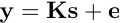
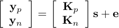
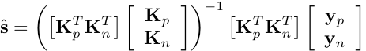
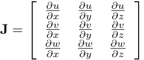

Contents
- Introduction
- Topup Users Guide
- Applytopup Users Guide
- Example Topup Followed By Applytopup
- FAQ
- Topup Further Information
- Applytopup Further Information
Principles
The "principles" here are really all about how to best deduce the "true" intensity values given a set of values distorted along a column and given a known field (i.e. known distortions. In applytopup there are two principal ways of doing that: the "least-squares restoration method" and the "jacobian modulation method".
Least-squares restoration
Consider a given column (of voxels) along the phase-encode direction and assume that we know the field d along that column. There is then a matrix K=K(d,p), where p describes the acquistion parameters (cf. --datain above), that maps the true (unknown) signal s along that column onto the distorted (observed) signal y. Hence the model is

where e is an error vector distributed as ~N(0,σ2). Let us further denote the K matrix obtained for acquisition parameters p corresponding to positive phase-encode blips by Kp and similarly use Kn for one with negative phase encode blips. We can then extend the model to

and hence solve for s through

The potential advantage of this method over "traditional" interpolations is that it properly takes into account the stretching/compression that occurs in the distorted images. In an area where intensity from several voxels has been compressed into a smaller number of voxels there has been a loss of resolution. To try to recover this resolution is like trying to re-create a sample from its mean. When acquiring data with opposing phase-encode directions every area of compression in one image has a corresponding area of stretching (and hence "super-resolution") in the other image. When performing least-squares restoration this information is "automatically" taken into account and one can potentially obtain corrected images with full resolution everywhere in the image.
In practice it is not always advantageous to use least-squares restoration. In the model above one of the assumptions is that e~N(0,σ2), which will never be completely true for modulus MR-images where the noise will be Rician. Similar assumptions are made in many contexts like e.g. fMRI analysis, DTI analysis etc etc. However and important distinction is that in many contexts analysis (along some fourth dimension) is attempted only for those voxels where SNR exceeds some arbitrary threshold, whereas here the entire column of voxels is considered and for many of those the e~N(0,σ2) assumption will be far from true. Hence it is a good idea to asses the relative merits of least-squares restoration and jacobian modulation for ones own data.
N.B. least-squares resoration can only be performed on pairs of (two or more) scans with phase-encoding along the same axis. It is e.g. not possible to perform least-squares restoration on one image acquired with left->right phase-encoding and another with anterior->posterior. If one has data with left->right, right->left, anterior->posterior and posterior->anterior encoding one can perfrom least-squares restoration on the two pairs independently and then average them (or enter both into fdt/bedpost independently).
Jacobian modulation
The other option is to perform a more "traditional" interpolation using some interpolation kernel (given by the --interp parameter) together with "Jacobian modulation". Consider an R3->R3 mapping that maps a coordinate triplet [x, y, z] to the triplet [u, v, w] where u=u(x,y,z) and equivalently for v and w. The Jacobian is then the matrix

The determinant of this matrix gives the relative volume of a small cube with unity volume centered on the point [x, y, z] after it has been mapped into a parallelepiped centered on [u, v, w]. Hence, in order to take this local change of volume into account when resampling a distorted image into undistorted space the intensity in each voxel is multiplied by the relative volume in the two spaces.
While this takes the volume changes into account it doesn't address the fact that for a given location the information content may be much higher in one of the distorted images than in the other. Say that at a given location 5 voxels have been collapsed into a single voxel in one of the acquisitions and correspondingly those 5 voxels have been stretched over some larger number of voxels in the other acquisition. Given only the first acquisition the best we could do would be to divide the content of that single voxel equal into the 5 voxels in undistorted space. Conversly in the other acqusition, even though the full information is present, one would undersample the available data (using a fixed size interpolation kernel). Finally these two individually "restored" images are averaged, leading to a "strange" superposition of an image with full resolution and one with loss of resolution.
As may be obvious from the above I believe that the least-squares restoration is on the whole a better idea. However, as stated above, it may be problematic for data with very low SNR and the relative merits of the two methods should be evaluated on ones own data.